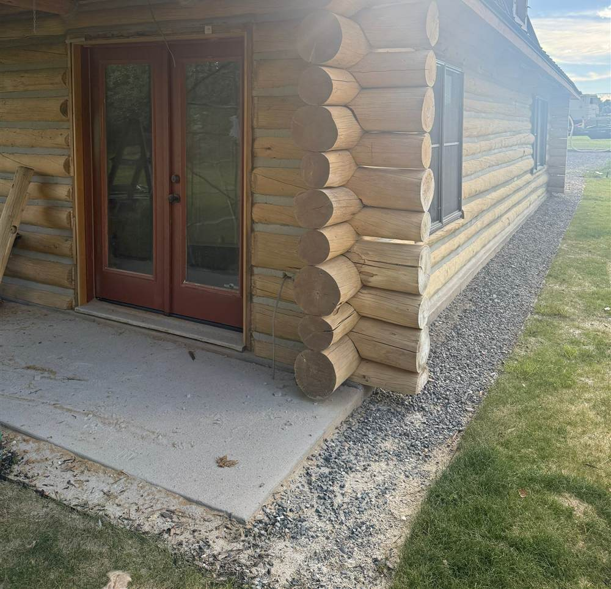

"Log home restoration" can mean anything from a weekend of stain work to rebuilding walls log by log, so asking what it costs is a little like asking what a car costs. The useful answer is to break it into levels, and then look at what moves the price inside each level. Here is how we think about log home restoration in Idaho, from the smallest job to the biggest.

The four levels of log home restoration
1. Refinish
The logs are sound, but the finish has failed. The job is stripping the old finish, often by media blasting, then new chinking where needed and a full stain system. This is the most common "restoration," and the least expensive. See our guide to log home staining cost in Idaho for what drives that price.
2. Repair
Some logs have soft spots or rot, usually the bottom courses, log ends, and window sills. Bad sections get cut out and replaced, the water problem that caused them gets fixed, and then the house gets refinished. Our guide to log home rot repair walks through how that works.
3. Structural restoration
Full logs need replacing, settling has thrown doors and windows out of line, or the foundation or sill logs have failed. This work involves supporting the walls while logs come out, and it takes more time, skill, and engineering.
4. Full restoration
Everything at once: structure, roof, finish, and often the interior. The Mackay, Idaho log home in the photo above is an example. The job replaced the old shake roof with standing-seam metal, refinished the logs, and remodeled the inside.
What drives the cost
- How much rot there is, and where. A few soft log ends are a small repair. Rot that runs along the bottom course of a whole wall is a bigger one. Rot in sill logs or under the structure is bigger still.
- Hidden damage. Some damage only shows once trim comes off or walls are stripped. A good assessment probes the logs and flags the likely problem areas up front, but restoration budgets should always have room for surprises.
- The roof. Many log homes that need restoration also have roofs at the end of their life, and a failing roof is often why the logs failed in the first place.
- Size, height, and access. Big walls, steep sites, and remote properties take more staging and travel.
- Matching the original logs. Replacement logs have to match the species, diameter, and profile of the originals so the repair blends in.
- Interior work. Restorations often grow into kitchens, baths, and systems once the walls are open.
Where the money goes furthest
The cheapest restoration is the one you never need. Most of the expensive work we see started as a finish that was left too long, then water damage, then rot. Keeping up with stain and chinking, and fixing water problems when they show up, is how log homes last a hundred years. Our log home maintenance guide lays out the schedule.
Getting a real number for your log home
Restoration is priced from what we find. We walk the house, probe the logs, check the roof, chinking, and finish, and tell you which level of work your home needs, and what it does not. Then we quote that.
Chase Construction restores log homes in Sun Valley, Ketchum, Hailey, Bellevue, and across central Idaho. Call 208-897-8100 for an honest assessment.